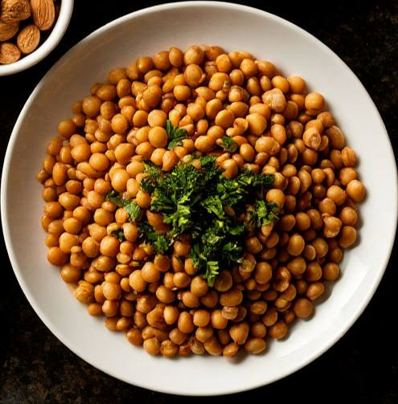

Витамины: где их найти?
Витамин A
Полезные свойства:
Улучшает зрение, поддерживает иммунную систему и способствует здоровью кожи. Этот витамин необходим для нормального фотопигментного цикла и правильного функционирования слизистых оболочек.
Основные продукты:
Морковь, сладкий картофель, тыква, печень, шпинат, брокколи.
Интересный факт:
В древности витамин A ценили за его роль в поддержании «зрения души». Недостаток этого витамина может привести к ночной слепоте, а избыток — вызвать токсические эффекты, поэтому баланс особенно важен.
Витамин B1 (Тиамин)
Полезные свойства:
Обеспечивает эффективный обмен веществ, поддерживает нервную систему и помогает организму превращать углеводы в энергию. Это «энергетический» витамин, без которого не обходится активный образ жизни.
Основные продукты:
Цельнозерновые (овсянка, ржаной хлеб), бобовые, свинина, орехи.
Интересный факт:
Тиамин был одним из первых витаминов, открытых на рубеже XX века, и его открытие сыграло ключевую роль в борьбе с болезнью бери-бери у рабочих, что изменило подходы к питанию в промышленном обществе.
Витамин B2 (Рибофлавин)
Полезные свойства:
Способствует выработке энергии, помогает поддерживать здоровую кожу, зрение и нервную систему, участвует в антиоксидантной защите клеток.
Основные продукты:
Молочные продукты, яйца, зеленые овощи, обогащённые злаковые.
Интересный факт:
Рибофлавин отвечает за естественный желтый оттенок у многих продуктов питания и помогает организму справляться со стрессовыми ситуациями, улучшая общее самочувствие.
Витамин C
Полезные свойства:
Мощный антиоксидант, который поддерживает иммунитет, способствует заживлению ран и синтезу коллагена, важного для здоровья кожи и соединительных тканей.
Основные продукты:
Цитрусовые (апельсины, грейпфруты), киви, болгарский перец, брокколи, клубника.
Интересный факт:
Исторически дефицит витамина C приводил к распространённой болезни — цинге. Его открытие и внедрение в рацион моряков на долгих морских экспедициях спасло множество жизней и стало одним из первых примеров клинического применения витаминов.
Витамин D
Полезные свойства:
Ускоряет всасывание кальция и фосфора, что способствует укреплению костей и зубов, а также помогает регулировать иммунную систему. Его часто называют «солнечным витамином», так как он вырабатывается в коже под воздействием солнечных лучей.
Основные продукты:
Жирная рыба (лосось, сардины), яичные желтки, обогащённое молоко и соки, некоторые грибы.
Интересный факт:
Основной источник витамина D — солнечный свет, поэтому в зимние месяцы или при недостатке солнца важно обогащать рацион продуктами и добавками, содержащими этот витамин. Неудивительно, что в северных широтах витамин D считается настоящей находкой для поддержания здоровья населения.
Витамин E
Полезные свойства:
Действует как мощный антиоксидант, защищая клетки от свободных радикалов, замедляет процессы старения кожи и помогает поддерживать иммунитет.
Основные продукты:
Растительные масла (подсолнечное, оливковое), орехи, семена (миндаль, подсолнечник), шпинат.
Интересный факт:
Витамин E получил своё название от греческого слова “tocopherol”, что означает «носитель детства», подчеркивая его важность для сохранения молодости и здоровья тканей.
Витамин K
Полезные свойства:
Ключевой компонент для нормального свертывания крови и поддержания крепкости костей. Он участвует в синтезе белков, необходимых для регуляции кальция в организме.
Основные продукты:
Зеленые листовые овощи (шпинат, капуста, брокколи), брюссельская капуста, петрушка, некоторые растительные масла.
Интересный факт:
Без достаточного количества витамина K даже незначительные травмы могут привести к длительному кровотечению. Этот факт особенно важен для новорожденных, поэтому их кормят специальными препаратами, содержащими витамин K, сразу после рождения.